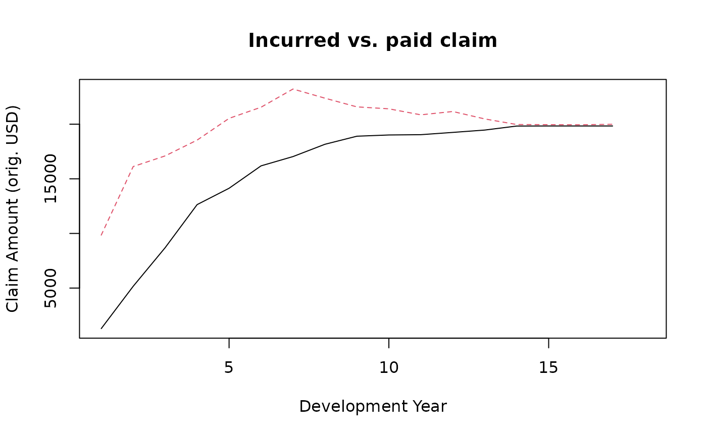
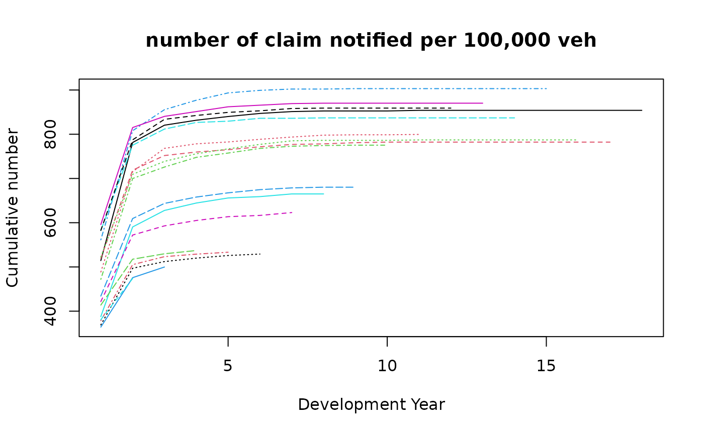
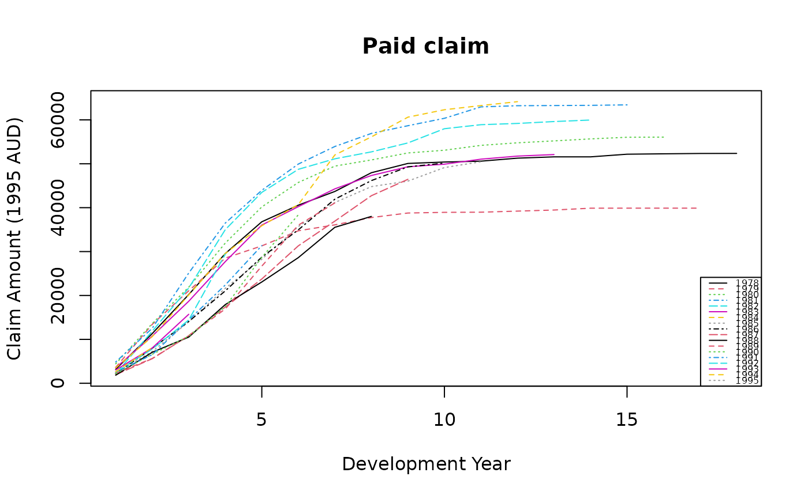
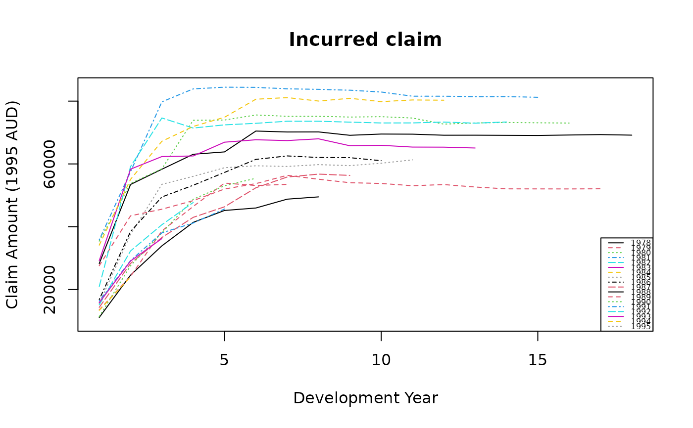

Australian private motor triangles
austriLob.RdDataset austri1autoBI7895 contains claim triangles from an Australian non-life
insurer between 1978 and 1995 for bodily injuries.
austri1autoBI7895 is a list of 5 elements : a triangle of paid amounts,
a triangle of incurred amounts, a traingle of notified claim number,
a vector of exposure (in number of vehicle) and a vector of claim inflation indices.
This corresponds respectively to
Tables 3.3 (incr) and 3.2 (cumul); Table 3.12 (cumul);
Tables 2.2 (incr) and 2.6 (cumul); Table B.1; Table B.2
of Taylor (2000).
Note that claim amounts of austri1autoBI7895 are incremental.
Dataset austri2auto contains claim triangles from an Australian non-life
insurer in run-off.
Note that claim amounts are incremental.
Format
austri1autoBI7895$paid, austri1autoBI7895$incur, austri1autoBI7895$nb
contain the insurance triangle, respectively for paid, incurred claims and claim number.
austri1autoBI7895$expo contains the vector of exposure, austri1autoBI7895$infl contains
the vector of inflation indexes.
austri2auto contains the run-off insurance triangle.
References
G. Taylor (2000), Loss reserving: an actuarial perspective, Springer Science + Business Media.
P. De Jong and G.Z. Heller (2008), Generalized linear models for insurance data, Cambridge University Press, doi:10.1017/CBO9780511755408 .
Examples
# (1) load of data
#
#1st Line of Business
data(austri1autoBI7895)
#2nd Line of Business
data(austri2auto)
# (2) graph
#
i <- 2
matplot(cbind(cumsum(austri1autoBI7895$paid[i,]), cumsum(austri1autoBI7895$incur[i,])),
type="l", ylab="Claim Amount (orig. USD)", xlab="Development Year",
main="Incurred vs. paid claim")

#claim number per 100 000 vehicles
fexpo <- 100000 / austri1autoBI7895$expo[rownames(austri1autoBI7895$nb)]
round(austri1autoBI7895$nb * fexpo, 1) #Table 2.1 of Taylor (2000)
#> dev
#> orig 1 2 3 4 5 6 7 8 9 10 11 12 13 14 15 16 17 18
#> 1978 514.4 267.0 39.1 11.2 8.4 7.0 4.2 1.4 0.0 0.0 1.4 0 0 0 0 0 0 0
#> 1979 519.3 199.5 33.0 7.9 5.3 6.6 5.3 1.3 2.6 1.3 0.0 0 0 0 0 0 0 NA
#> 1980 522.4 186.9 29.3 17.2 11.1 10.1 8.1 1.0 0.0 0.0 1.0 0 0 0 0 0 NA NA
#> 1981 561.3 246.7 47.6 21.4 16.5 5.8 2.9 0.0 1.0 0.0 0.0 0 0 0 0 NA NA NA
#> 1982 582.3 192.9 36.5 15.0 2.8 6.6 0.0 0.9 0.0 0.0 0.0 0 0 0 NA NA NA NA
#> 1983 595.8 219.4 25.3 10.8 10.8 3.6 3.6 0.9 0.0 0.0 0.0 0 0 NA NA NA NA NA
#> 1984 582.6 204.7 46.4 8.7 7.0 3.5 5.2 0.9 0.0 0.0 0.0 0 NA NA NA NA NA NA
#> 1985 488.5 226.8 52.9 10.2 4.3 6.0 5.1 4.3 0.9 0.0 0.9 NA NA NA NA NA NA NA
#> 1986 472.0 227.9 26.0 21.9 9.7 10.5 4.9 1.6 0.8 0.0 NA NA NA NA NA NA NA NA
#> 1987 434.1 175.3 34.3 14.3 9.6 7.2 4.0 1.6 0.0 NA NA NA NA NA NA NA NA NA
#> 1988 387.8 202.6 37.3 16.8 11.4 3.0 6.1 0.0 NA NA NA NA NA NA NA NA NA NA
#> 1989 421.7 150.4 20.8 12.2 8.6 2.9 6.4 NA NA NA NA NA NA NA NA NA NA NA
#> 1990 368.9 128.2 15.0 7.8 5.9 3.3 NA NA NA NA NA NA NA NA NA NA NA NA
#> 1991 378.6 126.6 18.1 5.6 4.4 NA NA NA NA NA NA NA NA NA NA NA NA NA
#> 1992 413.8 103.7 12.3 7.4 NA NA NA NA NA NA NA NA NA NA NA NA NA NA
#> 1993 364.0 111.7 24.1 NA NA NA NA NA NA NA NA NA NA NA NA NA NA NA
#> 1994 381.0 92.9 NA NA NA NA NA NA NA NA NA NA NA NA NA NA NA NA
#> 1995 375.1 NA NA NA NA NA NA NA NA NA NA NA NA NA NA NA NA NA
matplot(apply(austri1autoBI7895$nb * fexpo, 1, cumsum), type="l",
main="number of claim notified per 100,000 veh", ylab="Cumulative number",
xlab="Development Year")

#paid claim inflated
fclaim <- austri1autoBI7895$infl["1995", "EndYear"] / austri1autoBI7895$infl[, "EndYear"]
g <- function(x, n) c(tail(x, -n), rep(NA, n))
infl <- cbind(fclaim, sapply(1:17, function(n) g(fclaim, n)))
matplot(apply(austri1autoBI7895$paid * infl, 1, cumsum), type="l", ylab="Claim Amount (1995 AUD)",
xlab="Development Year", main="Paid claim", col=1:10)
legend("bottomright", leg=rownames(austri1autoBI7895$paid), lty=1:5, col=1:10, cex=.5)

#incurred claim inflated
matplot(apply(austri1autoBI7895$incur * infl, 1, cumsum), type="l", ylab="Claim Amount (1995 AUD)",
xlab="Development Year", main="Incurred claim", col=1:10)
legend("bottomright", leg=rownames(austri1autoBI7895$incur), lty=1:5, col=1:10, cex=.5)
